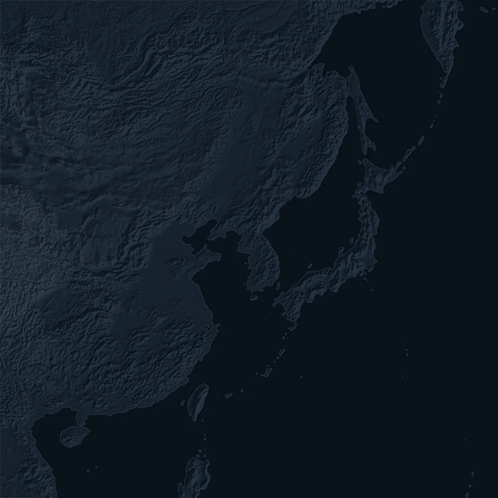

PEAK* East Asia
~40×The area of Korea’s radar coverage
Built
PEAK* datasetSatellite, radar, gauges, terrain
This presentation
Rainfall retrievalSatellite imagery to rainfall
In development
NowcastingRainfall hours ahead
In development
DownscalingSharper local detail
S2RAIN: High-resolution rainfall maps across East Asia

Model prediction
Placeholder
Neural network
One small step
From noise toward rainfall, guided by the satellite inputs
Straight paths from noise to rainfall
vs
c
All variablesEvery satellite input, plus terrain
Without terrainTerrain switched off
Infrared onlyA single infrared channel
CSIEvent detection
FSSSpatial agreement
SSIMSpatial structure
Geostationary satellites reach beyond regional radar limits.
Multimodal inputs improve satellite rainfall estimation, a promising direction for nowcasting.
A large-scale dataset across East Asia sets up what comes next: nowcasting and downscaling.
AI4Sci Korea 2026 · Seoul
S2RAIN: Satellite-to-RainfallHybrid Generative Modeling for Precipitation Nowcasting
Rogelio Ruzcko Tobias1,2
Minki Choo2, Jungho Im2, Yeji Choi1
1DI Lab, Inc. · 2Ulsan National Institute of Science and Technology (UNIST)
ruzcko@dilab.kr
AI4Sci Korea 2026
Thank you
ruzcko.com
Rogelio Ruzcko Tobias1,2
Minki Choo2, Jungho Im2, Yeji Choi1
1DI Lab, Inc. · 2Ulsan National Institute of Science and Technology (UNIST)
Loading…